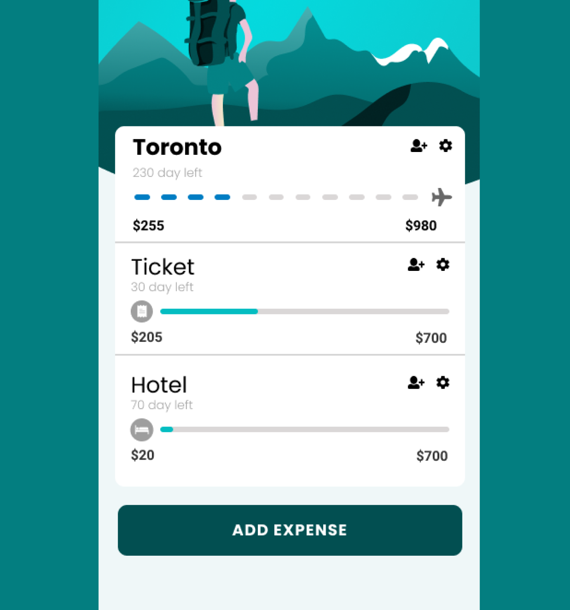

There are many financial solutions. However, most of them are based upon rational choice theory. Research has shown (Daniel Kahneman) that the choices we make are not rational. This is why I’ve attempted to make a tool to help people save money.
Background
My users are millennials in the Netherlands with a hedonistic live in the moment mentality. My user has a short-term orientation, which conflicts with their ability to save money. They don’t lack the income to save, just the control.
To research the perception of money and saving I set up a research plan with different iterations. I’ve done this by doing some roleplay with the user. To test the balance between saving and spending, I gave them monopoly money. To test emotion tied to those purchases I’ve asked them to map their purchases on a graph I designed.
Solution
I’ve found that pending money on a shared experience with another person is considered meaningful, because it contributes to social relationships with another person. This is whty I decided to go for a ‘group-saving’ concept.

My users save in sprints. This is why I introduced goal based saving. Smaller milestones, being part of the bigger picture. This also helps with their short-term orientation.
Loss Aversion (Daniel Kahneman) states that people prefer avoiding losses to acquiring equivalent gains: it is better to not lose $5 than to find $5. This is why I’ve included saving debt. If you miss your savings, you will be in debt to your own goal and in group based saving, others will see that you are in debt.

Iterations
Eventually I’ve made several iterations after the project ended. This was not to user test the concept, but to try and practice my UI skills. In the images below you can see how I’ve improved.
Reflection
At the end of the project I have researched what makes people bad savers and others good savers. Here I’ve learned that people who are good at saving, save for the sake of saving. People who are bad at saving, save for goals. Because of this it may be so that my idea of goal based saving might not actually make saving any better, it will just help people to spend money on the things they want.